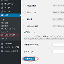

WordPressのデータダウンロード(csv,jsonファイルとしてダウンロード)
WordPressでのダウンロード機能を作成する場合、一般的なPHPの方法は使えず。
template_redirectフックを利用する必要がある。
URLの例 （プラグインのパスは含まないので注意）
http://localhost/test/wordpress?download=true
サンプル
add_action('template_redirect', 'download_action');
function download_action() {
if($_GET['download'] == 'true') {
$lineList = array();
$lineList[] = '大きな栗の木の下で';
$lineList[] = 'あなたとゾウムシ';
$lineList[] = '栗ひろいでしのぎをけずる';
$txt_file = "test.txt";
$utf8_flg = false; // true:utf8のファイルにする | false:shift-jisファイルにする
$buf="";// バッファ
// Shift-jisでダウンロードする
if(empty($utf8_flg)){
foreach($lineList as $line){
$buf .= mb_convert_encoding($line."¥r¥n", "SJIS-win", "UTF-8");
}
}
else{
$buf = "¥xEF¥xBB¥xBF"; // utf-8形式のファイルにするため、BOMをセットする。
foreach($lineList as $line){
$buf .= $line."¥r¥n";
}
}
header ("Content-disposition: attachment; filename=" . $txt_file);
header ("Content-type: application/octet-stream; name={$txt_file}; charset=utf-8");
print($buf);
exit;
}
}
カスタム投稿タイプの作成
カスタム投稿タイプを作成するには、プラグインのソースファイルに設定を記述するのが適切である。
プラグインのソースファイル(test_animal.php)
// カスタム投稿タイプ
add_action( 'init', create_custam_post_type1 ));
/**
* カスタム投稿タイプを作成する
*/
public function create_custam_post_type1() {
register_post_type( 'gecko_diary',
array(
'labels' => array(
'name' => __( 'ヤモリ' ),
'singular_name' => __( 'Gecko' )
),
'public' => true,
'has_archive' => true,
)
);
}
プラグインを有効にしてダッシュボードを開くと右側のメニューに新項目が追加されている。
ここから作成したカスタム投稿タイプに投稿できる。
パーマリンク
パーマリンクとはカスタム投稿タイプの投稿を一般へ公開するためのURLである。
パーマリンクは書換え可能である。
パーマリンクを適用するにはパーマリンクの更新を行わなければならない
パーマリンクの更新方法
設定→パーマリンク設定→「変更を保存」ボタン

以上で、パーマリンクにアクセスすると投稿が一般表示される。
WordPressのリダイレクト | wp_redirect
wp_redirect( 'URL' );
exit;
投稿ページへのリダイレクト
wp_redirect( admin_url('post.php') );
exit;
リファレンス
コアからフックを探す方法
WordPressでのプラグイン開発ではフック探しが重要である。
コアファイルのソースコードを
do_actionまたは
apply_filtersで検索するとフックの元場所が分かる。
カスタム投稿タイプへ独自入力フォームを追加（さらにメタデータとして保存)
プラグインファイル
test_animal.php
<?php
/*
Plugin Name: テスト・アニマル・プラグイン
Plugin URI: http://amaraimusi.sakura.ne.jp/note_prg/wordpress/
Description: プラグイン開発のHello Worldです。
Version: 1.0
Author: kenji uehara
Author URI: http://amaraimusi.sakura.ne.jp/
License: MIT
*/
class TestAnimal {
public function __construct(){
// 管理者メニューへ項目を追加する
add_action('admin_menu', function(){
// 省略
});
// カスタム投稿タイプを作成
add_action( 'init', array($this, 'create_custam_post_type1' ));
// カスタム投稿タイプに独自の入力フォームを追加する。 | add_meta_boxと利用した方法
add_action( 'edit_form_advanced', function($post){
add_meta_box('post_dog', '飼い犬名', array($this, 'add_metabox_post_dog' ), 'gecko_diary', 'advanced', 'high');
});
// 独自入力フォームからのメタデータをDB保存する
add_action('save_post',array($this, 'save_meta_post_dog'));
}
/**
* 独自入力フォームからのメタデータをDB保存する
* @param unknown $post_id
* @return unknown
*/
public function save_meta_post_dog($post_id){
// 投稿タイプをチェック
if ( 'gecko_diary' != $_POST['post_type'] ) {
return $post_id;
}
// POSTから値を取得する
$post_dog= $_POST['post_dog'];
// DB保存する
$this->save_post_meta_value($post_id,'post_dog',$post_dog);
}
/**
* メタ値をDB登録する
* @param unknown $value メタ値
*/
private function save_post_meta_value($post_id,$meta_key,$meta_value){
if(get_post_meta($post_id, $meta_key) == ""){
add_post_meta($post_id, $meta_key, $meta_value, true);
}elseif($meta_value != get_post_meta($post_id, $meta_key, true)){
update_post_meta($post_id, $meta_key, $meta_value);
}elseif($meta_value == ""){
delete_post_meta($post_id, $meta_key, get_post_meta($post_id, $meta_key, true));
}
}
/**
* 独自の入力フォームを作成する
*/
public function add_metabox_post_dog(){
global $post;
$value = get_post_meta($post->ID, 'post_dog', true);
echo "<input type='text' name='post_dog' value='{$value}' />";
}
/**
* カスタム投稿タイプを作成する
*/
public function create_custam_post_type1() {
register_post_type( 'gecko_diary',
array(
'labels' => array(
'name' => __( 'ヤモリ' ),
'singular_name' => __( 'Gecko' )
),
'public' => true,
'has_archive' => true,
'exclude_from_search' => false, //検索対象に含めるか
'show_in_menu' => true,
'supports' => array(
'title',
'editor',
// 'comments',
// 'excerpt',
// 'thumbnail',
// 'custom-fields',
// 'post-formats',
// 'page-attributes',
// 'trackbacks',
// 'revisions',
// 'author'
),
)
);
}
}
$testAnimal = new TestAnimal();
カスタム投稿タイプの画面
参考サイト
プラグインディレクトリパスを取得 (URLではない一般OSのパス）
$plugin_dp = WP_PLUGIN_DIR . '/' . plugin_basename(__DIR__);
// 出力例→ C:¥xampp¥htdocs¥wordpress1¥wp-content¥plugins¥animal
WPクーロン
/*
Plugin Name: テスト・アニマル・プラグイン
Plugin URI: http://amaraimusi.sakura.ne.jp/note_prg/wordpress/
Description: プラグイン開発のHello Worldです。
Version: 1.0
Author: kenji uehara
Author URI: http://amaraimusi.sakura.ne.jp/
License: MIT
*/
class TestAnimal {
public function __construct(){
// WPクーロンが未登録なら登録する
if ( ! wp_next_scheduled( 'cron_event1') ) {
wp_schedule_event( time(), 'hourly', 'cron_event1');
}
add_action( 'cron_event1', array($this, 'barkCat' ));
// wp_clear_scheduled_hook('cron_event1'); // WPクーロンを登録解除する
}
public function barkCat(){
error_log('吠えるネコ'); // 一時間に一回、debug.logに出力される
}
}
クーロンの登録コード（cron_event1）は他のプラグインと重複しないように注意する。
WP-Cronプラグインをインストールするとクーロンの登録状況を容易に調べられる。
参考サイト
実行したSQLを表示する
// デバッグモードのSQLダンプ準備
$wpdb->show_errors();
// ★INSERT実行
$result = $wpdb->insert( $table, $ent_s);
// デバッグモードのSQLダンプ出力
$wpdb->print_error();
xxx
- ホーム
- プログラミングの覚書
- WordPressの覚書
- WordPressの覚書